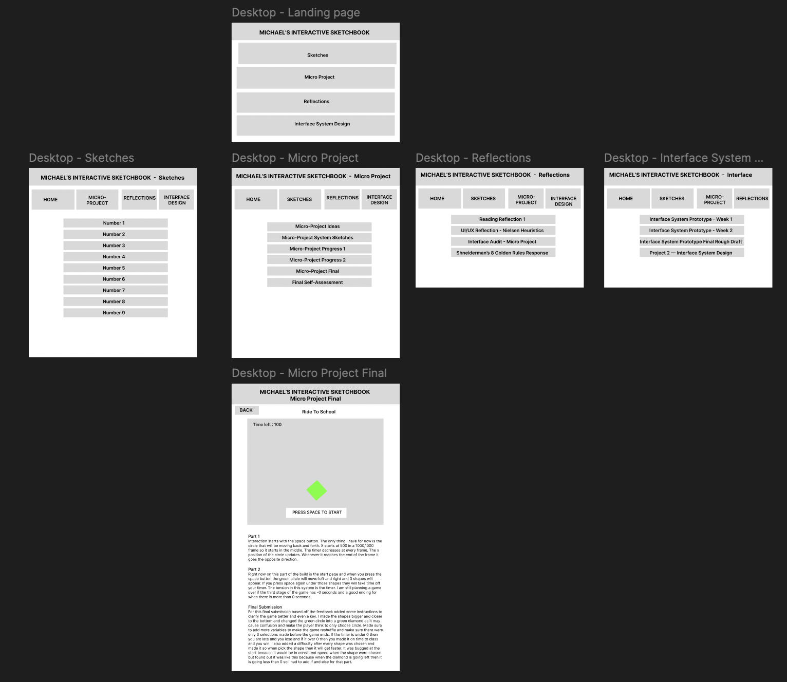
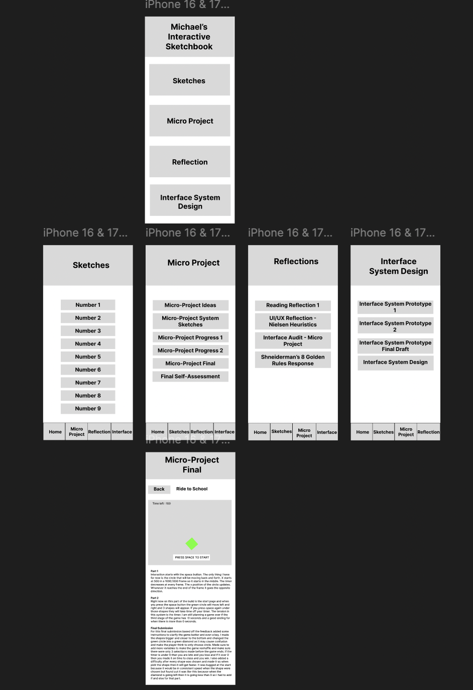

For my final model in figma on both desktop and mobile versions I decided to move around the pages and organize them from top to bottom and but smaller pages such as the micro project under pages where they would come from. Did this for both and finally added a fourth option in my landing page which was this interface project so it looks more like how it would actually look like in the actual final version of it. Made sure that the buttons were clickable to their correct pages along with the new interface project page. For the hierarchy I made sure to make it look better on the rough draft final and made two seperate text styles for both desktop version and mobile versions to make it easier to just select the size of the type. I kept the same design of having the options to choose the different pages throughout the sketchbook and added the new page as well and also kept the same design on the mobile version of the prototype of having that same navigation of the different pages of the sketchbook at the bottom of the screen on the phone. From Norman I always thought when he explained how the user has to always know what is happening so I made sure to let the user know at the top of the screen always on what part of the sketchbook they are in. In Nielsens rules I tried my best to implement the rules, 1.Visibility of the system, 3. User control and freedom, 4. Consistency and Standards, and 7. Flexibility and efficiency. For Ben Shneiderman I pretty much thought of similar rules such as striving for consistency, offering informative feedback, permitting easy reversal of actions and keeping users in control. A lot these rules are basically on the sub pages such as the ones under reflections and sketches where the user gets to choose if they want to go back to the home page or if they want to go to another page for that one page. And things like consistency and standards I just try to make every page look similar and have the same functions as the rest so that the use is not confused on what to do on any part of the sketchbook.

